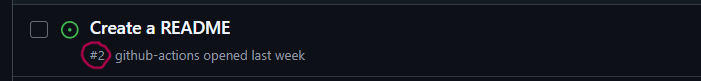

5. How do git branches work?#
We’re going to contiue what we’ve started last week and get more practice on the interaction between git and GitHub
5.1. Reminder#
Last week we
Created an issue on GitHub (create an about file)
Created a branch out of that issue (Development)
Used the command
git fetchto fetch all new changes from GitHub into the.gitfoldergit told us that there was a new branch created called
1-create-an-about-fileWe created a local branch that matches the name of the GitHub branch (upstream) with the command
git checkout 1-create-an-about-fileWe created a new file through the terminal using the
touchcommandWe edited the file using a text editor available to us on the terminal named
nanoWe added the changed file to the staging area using
git addWe commited the change to our local repo using
git commit -m <message>We pushed the changes to the online repo using
git push
Let’s pull up our project on the terminal first
cd ~/Documents/systems/gh-inclass-AymanBx
Let’s also pull up the folder in the file explorer
Always remember to check up on the status of your project
git status
On branch 1-create-an-about-file
Your branch is up to date with 'origin/1-create-an-about-file'.
nothing to commit, working tree clean
Let’s take a look at our files
ls -a
. .git
.. .github
about.md
5.2. It’s not magic#
What happens if we switch branches? Keep an eye on the folder on the side while you switch branches
git switch main
Let’s take a look at our files now
ls -a
. .git
.. .github
We can’t see the file about.md
git status
On branch main
Your branch is up to date with 'origin/main'.
nothing to commit, working tree clean
Obviously no changes have been done to main both locally or on GitHub yet which makes sense
And finally, Let’s pull up the repo online
gh repo view --web
If we’re on main we can’t see the about.md file. Let’s change the branch to 1-create-an-about-file
Now we can see the about file on the online inclass repo but only in the create-about branch
How do we apply the changes (new file) to main?
[ ] commit
[ ] git add
[x] pull request & merge
[ ] close the issue
If GitHub prompts you, select compare and pull request
Or click on contribute and then open pull request
Merge pull request
Back to code section. Now we can see the about.md file!
We can also see the the number of issues went down by 1 (from 1 to none) That’s because of two reasons, one of them is because the branch was created from the development section of the issue (effectively liking the issue to the branch and later to the pr). The other reason is because of the commit message that we wrote when we created the about file. We’ll see this actually take affect in a few minutes.
On the terminal
ls -a
. .git
.. .github
The local repo is still unaware of the changes.
5.3. Sync#
git fetch
remote: Enumerating objects: 4, done.
remote: Counting objects: 100% (4/4), done.
remote: Compressing objects: 100% (2/2), done.
remote: Total 3 (delta 0), reused 0 (delta 0), pack-reused 0 (from 0)
Unpacking objects: 100% (3/3), 925 bytes | 154.00 KiB/s, done.
From https://github.com/compsys-progtools/gh-inclass-AymanBx
98ca2d6..4f26167 main -> origin/main
git status
On branch main
Your branch is behind 'origin/main' by 1 commit, and can be fast-forwarded.
(use "git pull" to update your local branch)
nothing to commit, working tree clean
ls -a
. .git
.. .github
git is aware of some changes that were made. But the changes still aren’t reflected on the file system locally.
git is so nice. It always gives us pointers as to where to go from here…
git pull
Updating 98ca2d6..4f26167
Fast-forward
about.md | 3 +
1 file changed, 3 insertion(+)
create mode 100644 about.md
And finally. One last time
ls -a
. .git
.. .github
about.md
5.4. Closing an issue with a commit message#
Let’s create a new issue (if you don’t already have one) called Create a README
Pay attention to what number that issue is assigned (Marked with a #)
Back to the code section. Click on add a README button and use the following content
contents:
# GitHub Practice
Name: <your name here>
Before you commit, take a look at the issues tab above (don’t open it). What is the number showing next to the word issues?
Commit directly to main. Add to the commit message closes #<number_of_issue>
Now take another look at the number of issues.
What happened?
We put the special keyword closes in the commit message when we commited the change.
“closes #2”
What does that mean? What is #2?
#2 is referring to the issue Create a README. It is labeled #2 on GitHub
Go check it out! Open the issues tab and click on Closed

What does that mean?
When we use the closes keyword in a commit message, GitHub recognizes that the commit message said closes #2 and close the issue for us!
Other words that may work: fixes, resolves, etc.
5.5. Branches do not sync automatically#
Now we go back to the main branch
git checkout main
Switched to branch 'main'
Your branch is up to date with 'origin/main'.
It thinks that we are up to date because it does not know about the changes to origin/main yet.
ls
about.md
the file is missing. It said it was up to date with origin main, but that is the most recent time we checked github only. It’s up to date with our local record of what is on GitHub, not the current GitHub.
Next, we will update locally, with git fetch
git fetch
remote: Enumerating objects: 1, done.
remote: Counting objects: 100% (1/1), done.
remote: Total 1 (delta 0), reused 0 (delta 0), pack-reused 0 (from 0)
Unpacking objects: 100% (1/1), 911 bytes | 455.00 KiB/s, done.
From https://github.com/compsys-progtools/gh-inclass-AymanBx
0e7c990..0c12714 main -> origin/main
Here we see 2 sets of messages. Some lines start with “remote” and other lines do not.
The “remote” lines are what git on the GitHub server said in response to our request and the
other lines are what git on your local computer said.
So, here, it counted up the content, and then sent it on GitHub’s side. On the local side, it unpacked (remember git compressed the content before we sent it). It describes the changes that were made on the GitHub side, the main branch was moved from one commit to another. So it then updates the local main branch accordingly (“Updating 6a12db0…caeacb5”).
We can see that if this updates the working directory too:
ls
no changes yet. fetch updates the .git directory so that git knows more, but does not update our local file system.
about.md
5.5.1. Git Merge#
After merge, it looks like this:
There is a new commit with the content.
In our case it is simpler:
so it will fast forward
5.5.2. git rebase#
If a repo is like this:
after:
5.6. Git Pull#
remember git pull does:
git fetchgit merge(default, if possible) orgit rebase(if settings or with option)
git pull
Updating 0e7c990..0c12714
Fast-forward
README.md | 3
---
1 file changed, 3 insertions(+)
create mode 100644 README.md
Now, we can check again
ls
README.md about.md
and it looks as expected
5.7. making a new branch locally#
We’ve used git checkout to switch branches before. But last time we had created the branch on GitHub first and applied git fetch
If we use checkoutand an unkown branch name
git checkout my_branch
error: pathspec 'my_branch' did not match any file(s) known to git
it give us an error, this does not work
git checkout expects there to be a branch known in the .git directory. Either a local one or one that was fetched from a remote (upstram/online) repository. If it were the latter, git creates a new local branch that tracks the online branch (meaning it links them so you can push and pull between them)
To create a branch at the same time, we use the -b option. with -b we can make a new branch and switch to it at the same time.
git checkout -b my_branch
Switched to a new branch 'my_branch'
so we see it is done!
What was this a shortcut for?
First let’s go back to main
git checkout main
Or
git switch main
Switched to branch 'main'
Your branch is up to date with 'origin/main'.
create does not exist
git branch create fun_fact
fatal: not a valid object name: 'fun_fact'
so it tried to treate create as a name and finds that as extra
This version gives us two new observations
git branch fun_fact; git checkout fun_fact
Switched to branch 'fun_fact'
It switches, but does not say it’s new. That is because it made the branch first, then switched.
The ; allowed us to put 2 commands in one line.
We can view a list of branches:
git branch
1-create-a-readme
main
* fun_fact
my_branch
or again look at the log
git log
<enter log here>
branches are pointers, so each one is located at a particular commit.
the -r option shows us the remote ones
git branch -r
origin/1-create-a-readme
origin/HEAD -> origin/main
origin/main
5.8. Merge Conflict#
nano about.md
we used the nano text editor. nano is simpler than other text editors that tend to be more popular among experts, vim and emacs. Getting comfortable with nano will get you used to the ideas, without putting as much burden on your memory. This will set you up to learn those later, if you need a more powerful terminal text editor.
this opens the nano program on the terminal. it displays reminders of the commands at the bottom of th screen and allows you to type into the file right away.
Add any fun fact on the line below your content. Then, write out (save), it will prompt the file name. Since we opened nano with a file name (about.md) specified, you will not need to type a new name, but to confirm it, by pressing enter/return.
cat about.md
Second semster Masters
Expected graduation May 2026
- Got my BS in 2023
git status
On branch fun_fact
Changes not staged for commit:
(use "git add <file>..." to update what will be committed)
(use "git restore <file>..." to discard changes in working directory)
modified: about.md
no changes added to commit (use "git add" and/or "git commit -a")
git add about.md
git status
On branch fun_fact
Changes to be committed:
(use "git restore --staged <file>..." to unstage)
modified: about.md
we are going to do it without the -m on purpose here to learn how to fix it
git commit
[fun_fact 70759fd] add fun fact
1 file changed, 1 insertion(+)
git status
On branch fun_fact
nothing to commit, working tree clean
without a commit message it puts you in vim. Read the content carefully, then press a to get into ~insert~ mode. Type your message and/or uncomment the template.
When you are done use escape to go back to command mode, the ~insert~ at the bottom of the screen will go away. Then type :wq and press enter/return.
What this is doing is adding a temporary file with the commit message that git can use to complete your commit.
Now let’s go back to main
git switch main
On branch main
Your branch is up to date with 'origin/main'.
nothing to commit, working tree clean
Let’s look at the contents of about.md
cat about.md
Second semster Masters
Expected graduation May 2026
The file about.md in main is still unaware of our changes in the fun_fact branch
How can we apply those changes to main locally?
git merge fun_fact
Updating 8bd4ea3..8040553
Fast-forward
about.md | 1 +
1 file changed, 1 insertion(+)
Let’s check if that worked:
git status
On branch main
Your branch is ahead of 'origin/main' by 1 commit.
(use "git push" to publish your local commits)
nothing to commit, working tree clean
cat about.md
Second semster Masters
Expected graduation May 2026
- Got my BS in 2023
We can see the updated about.md on main now
5.9. Merge conflicts#
We are going to intentionally make a merge conflict here.
This means we are learning two things:
what not to do if you can avoid it
how to fix it when a merge conflict occurs
Merge conflicts are not always because someone did something wrong; it can be a conflict in the simplest term because two people did two types of work that were supposed to be independent, but turned out not to be.
First, in your browser edit the about.md file to have a different fun fact.
Second semster Masters
Expected graduation May 2026
- I graduated from highschool abroad
Commit changes directly to main
Now let’s try updating our local repo with a pull command
git pull
hint: You have divergent branches and need to specify how to reconcile them.
hint: You can do so by running one of the following commands sometime before
hint: your next pull:
hint:
hint: git config pull.rebase false # merge
hint: git config pull.rebase true # rebase
hint: git config pull.ff only # fast-forward only
hint:
hint: You can replace "git config" with "git config --global" to set a default
hint: preference for all repositories. You can also pass --rebase, --no-rebase,
hint: or --ff-only on the command line to override the configured default per
hint: invocation.
fatal: Need to specify how to reconcile divergent branches.
Now it cannot work because the branches have diverged. This illustrates the fact that our two versions of the branch main and origin/main are two separate things.
git gave us some options, we will use rebase which will apply our local commits after the remote commits.
git pull --rebase
Auto-merging about.md
CONFLICT (content): Merge conflict in about.md
error: could not apply 62dcf61... local Added fun fact
hint: Resolve all conflicts manually, mark them as resolved with
hint: "git add/rm <conflicted_files>", then run "git rebase --continue".
hint: You can instead skip this commit: run "git rebase --skip".
hint: To abort and get back to the state before "git rebase", run "git rebase --abort".
hint: Disable this message with "git config advice.mergeConflict false"
Could not apply 62dcf61... local Added fun fact
it gets most of it, but gets stopped at a conflict.
git status
interactive rebase in progress; onto 462402f
Last command done (1 command done):
pick 62dcf61 local Added fun fact
No commands remaining.
You are currently rebasing branch 'main' on '462402f'.
(fix conflicts and then run "git rebase --continue")
(use "git rebase --skip" to skip this patch)
(use "git rebase --abort" to check out the original branch)
Unmerged paths:
(use "git restore --staged <file>..." to unstage)
(use "git add <file>..." to mark resolution)
both modified: about.md
no changes added to commit (use "git add" and/or "git commit -a")
this highlights what file the conflict is in
we can inspect this file
nano about.md
Second semster Masters
Expected graduation May 2026
<<<<<<<< HEAD
- I got my BS in 2023
=======
- I graduated from highschool abroad
>>>>>>>> "local main"
We have to manually edit it to be what we want it to be. We can take one change the other or both.
nano about.md
In some situations if it’s actually the same line of code edited in two different ways you might choose to keep one and throw out the other. In other cases it might be two different lines of code (or fun facts) occupying the same line in the file. In this case, we will choose to keep both, so my file looks like this in the end.
Second semster Masters
Expected graduation May 2026
- I got my BS in 2023
- I graduated from highschool abroad
git status
interactive rebase in progress; onto 462402f
Last command done (1 command done):
pick 62dcf61 aded fun fact
No commands remaining.
You are currently rebasing branch 'main' on '462402f'.
(fix conflicts and then run "git rebase --continue")
(use "git rebase --skip" to skip this patch)
(use "git rebase --abort" to check out the original branch)
Unmerged paths:
(use "git restore --staged <file>..." to unstage)
(use "git add <file>..." to mark resolution)
both modified: about.md
no changes added to commit (use "git add" and/or "git commit -a")
Now, we do git add and commit
git commit -a -m 'keep both changes'
[detached HEAD c3e68a0] keep both changes
1 file changed, 2 insertions(+)
and check again
git status
interactive rebase in progress; onto 462402f
Last command done (1 command done):
pick 62dcf61 local Added fun fact
No commands remaining.
You are currently editing a commit while rebasing branch 'main' on '462402f'.
(use "git commit --amend" to amend the current commit)
(use "git rebase --continue" once you are satisfied with your changes)
nothing to commit, working tree clean
Now, we follow the intructions again, and continue the rebase to combine our branches
git rebase --continue
Successfully rebased and updated refs/heads/main.
Once we rebase and everything is done, we can push.
git push
Enumerating objects: 5, done.
Counting objects: 100% (5/5), done.
Delta compression using up to 8 threads
Compressing objects: 100% (3/3), done.
Writing objects: 100% (3/3), 309 bytes | 309.00 KiB/s, done.
Total 3 (delta 2), reused 0 (delta 0), pack-reused 0 (from 0)
remote: Resolving deltas: 100% (2/2), completed with 2 local objects.
To https://github.com/compsys-progtools/gh-inclass-AymanBx.git
462402f..c3e68a0 main -> main
5.10. Summary#
branches do not synch automatically
branches are pointers to commits
every commit knows its parents
if two different commits have the same parent, when we try to merge we will have divergent branches
divergent branches can be merged by different strategies
a merge conflict occurs if, when merging branches, a single file has been edited in two different ways
We often visualize git using graphs like subway maps:
However you can also think of what we learned today like this:
Over the next few weeks we will keep refining this understanding.
5.10.1. New bash commands#
command |
explanation |
|---|---|
|
concatenate a file to standard out (show the file contents) |
5.10.2. New git commands#
command |
explanation |
|---|---|
|
merge specified branch into the one git is currently on |
|
list branches in the repo |
|
create a |
|
create a |
|
apply or fetch and apply changes from a remote branch to a local branch |
5.11. Prepare for Next Class#
Bring git questions or scenarios you want to be able to solve to class on Thursday (in your mind or comment here if that helps you remember)
Try read and understand the workflow files in your KWL repo, the goal is not to be sure you understand every step, but to get an idea about the big picture ideas and just enough to complete the following. Try to modify files, on a prepare branch, so that your name is already filled in when your experience badge (inclass)/Forgotten/ and Makeup action runs. We will give the answer in class, but especially do not do this step on the main branch it could break your action.
5.12. Badges#
Create a merge conflict in your github in class repo and resolve it using your favorite IDE,. Describe how you created it, show the files, and describe how your IDE helps or does not help in ide_merge_conflict.md. Give advice for when you think someone should resolve a merge conflict manually vs using an IDE. (if you do not regulary use an, IDE, try VSCode)
Read more details about git branches(you can also use other resources) add branches.md to your KWL repo and describe how branches work, in your own words. Include one question you have about branches or one scenario you think they could help you with.
Create a merge conflict in your KWL repo on the branch for this issue and resolve it using your favorite IDE, then create one and resolve it on GitHub in browser (this requires the merge conflict to occur on a PR). Describe how you created it, show the files, and describe how your IDE helps or does not help in merge_conflict_comparison.md. Give advice for when you think someone should resolve a merge conflict in GitHub vs using an IDE. (if you do not regulary use an, IDE, try VSCode) You can put content in the file for this step for the purpose of making the merge conflicts for this exercise.
Learn about GitHub forks and more about git branches(you can also use other resources)
In branches-forks.md in your KWL repo, compare and contrast branches and forks; be specific about their relationship. You may use mermaid diagrams if that helps you think through or communicate the ideas. If you use other resources, include them in your file as markdown links.
5.13. Questions After Today’s Class#
5.13.1. Can you have conflicts betwen local branches?#
Absolutely you can. If any two branches whether both are local, both online or one of each edit the same file and try to merge you will get a conflict
5.13.2. What happens where there are multiple people working offline and try to commit all at the same time?#
Same as you would expect. There’s no such thing as exactly at the same time. One commit will get pushed before the other one and the other one will either get added to it if it doesn’t conflict with the first one or the branch will diverge as we saw in class and the person pushing the second commit will have to fix it.
5.13.3. How do I know when to use hit switch and when to use for checkout?#
git switchalways good for switching between branches and it’s safe because it won’t create a new branch if one doesn’t already exist.git checkout: switches if a local branch exists. Creates a new branch ONLY if an online branch with the exact same name exits (and it links both branches to each other)git checkout -b: literally creates a new branch first and then switches to it. It executes two commands:git branch <name>+git checkout <name>